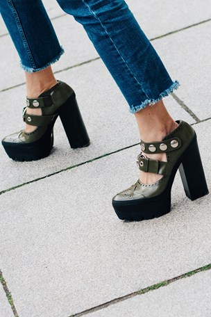

Behind The Cover: Rihanna's Cowgirl Chic
When you're booked as a hairstylist for British Vogue's April cover shoot and the subject is Rihanna, you know your day won't be a boring one. If there's anyone prepared to experiment with their look it's Rihanna, which is why her regular collaborator Yusef Williams - who has worked with her on her Balmain, Dior and Puma campaigns and is currently on the Anti tour - was the only man for the job.
Ten Street-Style Tricks To Wear Now

WE'VE had a glimmer of spring (you could have missed it - but, the sun did appear for half an hour on Tuesday). In the fashion calendar, this means it's time for a style overhaul. But, don't buy anything just yet. Here's Vogue's edit of the 10 hottest trends the street-style stars are wearing now. Get set to remix the pieces you already own.
In Praise Of The Podcast
Until recently, I was one of the dimly uninitiated. I moved about my life with just the silence of my thoughts ringing in my ears. I was not unhappy - but then one of the enlightened, naturally sitting in the Vogue office, asked me whether I had listened to the New Yorker: Fiction podcast.
"You'd like it, " she said. So I listened - and I did like it, very much. And that made me sad, for I realised how I had, up to this point, wasted long hours, even days, of my life consumed by the mundane when I could have been sharing the thoughts of the brilliant. (And then later - at dinner, say - passing off their very clever ruminations as my own.).